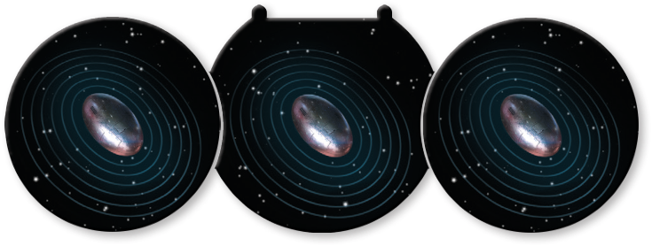

Cluster Mine

Additional Cluster Mine 1
Center
Additional Cluster Mine 2
Types: Device, Mine
A Cluster Mine Set consists of 3 individual Cluster Mine devices.
When a Cluster Mines set is placed, the center Cluster Mine is placed as normal, then two additional Cluster Mines are placed in the recesses as shown.
After a ship overlaps or moves through any individual Cluster Mine, it detonates. Other Cluster Mines in the set that were not overlapped or moved through do not detonate.
When each of these devices detonates, that ship rolls 2 attack dice. That ship then suffers 1 / damage for each matching result.